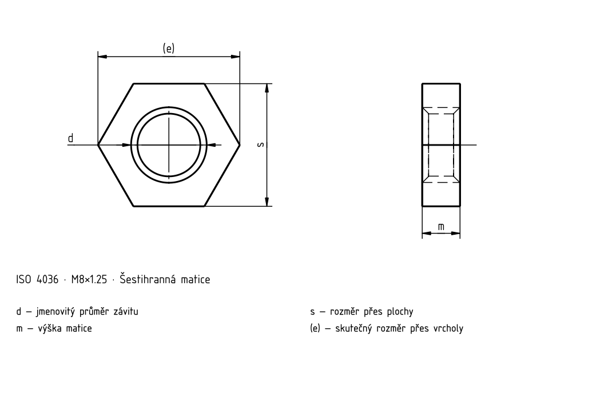

Šestihranné matice nízké bez sražení
Historický podklad; číselné hodnoty a výjimky nejsou úplně ověřené proti platné normě.

Šestihranné matice nízké bez sražení
| d | Rozteč P | e _min. | m _max. | m _min. | s _max. | s _min. |
|---|---|---|---|---|---|---|
| M1,6 | 0,35 | 3,28 | 1 | 0,6 | 3,2 | 2,9 |
| M2 | 0,4 | 4,18 | 1,2 | 0,8 | 4 | 3,7 |
| M2,5 | 0,45 | 5,31 | 1,6 | 1,2 | 5 | 4,7 |
| M3 | 0,5 | 5,87 | 1,8 | 1,4 | 5,5 | 5,2 |
| (M3,5) | 0,6 | 6,44 | 2 | 1,6 | 6 | 5,7 |
| M4 | 0,7 | 7,5 | 2,2 | 1,8 | 7 | 6,64 |
| M5 | 0,8 | 8,63 | 2,7 | 2,3 | 8 | 7,64 |
| M6 | 1 | 10,89 | 3,2 | 2,72 | 10 | 9,64 |
| M8 | 1,25 | 14,2 | 4 | 3,52 | 13 | 12,57 |
| M10 | 1,5 | 17,59 | 5 | 4,52 | 16 | 15,57 |
Šestihranné matice nízké bez sražení · Normový kontext
| Položka | Hodnota |
|---|---|
| Normový kontext | ISO 8992:2005 |
| Výrobní třída | — |
| Pevnostní třída | Úplné znění normy je potřeba k ověření rozměrů, tolerancí a všech podmínek. |